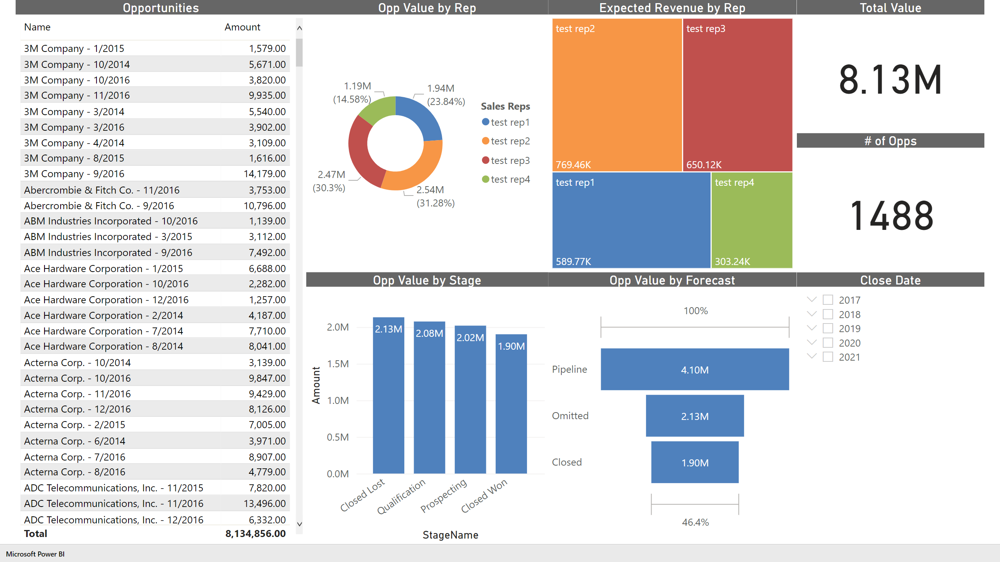

Sales Performance Visualized in Power BI
Directors responsible for sales performance must make macro strategic decisions to achieve departmental success. Visibility of ongoing and future sales performance are essential in this effort. I have created a sample dashboard to preview the benefits of applying advanced analytics.
For the purposes of this demo we are primarily interested in the four tiles in the center of our report. Opportunity value is segmented by sales rep to track their contribution to the total book of business. Expected revenue is opportunity value multiplied by the probability of reaching closed won status. Beneath that we have that same book of business segmented by stage and forecast to track the pipeline's progression. It is important to note that like our Tableau report, all tiles are related and therefore enable cross filtering. For example, we can highlight test rep2, hold control and click on the qualification and prospecting stages to see a total pipeline value of $1.28m from 231 opportunities that can be seen on the left-hand list view.
I built the report to reflect a realistic workflow. To do this I imported a faux sales data set to my personal Salesforce instance and then passed it through to Power BI to be visualized. Specifically, we pass through the Salesforce data on the object level to preserve the data's relationships from the CRM which also required slight modification using Power Query.
View the full report available on my public Power BI workspace here.